Validation¶
Test case 1: Cogeneration¶
This test-case originates from [ProtoOTGUI2014] and can be found in python/test/t_Cogeneration_std.py.
- The purpose of this example is to check:
The Central tendency analysis using the Taylor Expansions;
the default values calculated for the parameters of a parametric analysis.
The obtained results must be equal to the analytical values.
Show/Hide Code
#!/usr/bin/env python
from __future__ import print_function
import openturns as ot
import openturns.testing
import persalys
myStudy = persalys.Study('myStudy')
# Model
dist_Q = ot.Normal(10200, 100)
dist_E = ot.Normal(3000, 15)
dist_C = ot.Normal(4000, 60)
Q = persalys.Input('Q', 10200, dist_Q, 'Primary energy (W.h)')
E = persalys.Input('E', 3000, dist_E, 'Produced electric energy (W.h)')
C = persalys.Input('C', 4000, dist_C, 'Valued thermal energy (W.h)')
Ep = persalys.Output('Ep', 'Primary energy savings (W.h)')
model = persalys.SymbolicPhysicalModel(
'myPhysicalModel', [Q, E, C], [Ep], ['1-(Q/((E/((1-0.05)*0.54))+(C/0.8)))'])
myStudy.add(model)
outputSample = [[0.060036508072],
[0.0812679132055],
[0.0684295269203],
[0.0892876773294],
[0.0292238907867],
[0.0511512752497],
[0.0378920382755],
[0.0594339324804]]
# Design of Experiment - Parametric analysis ##
bounds = persalys.GridDesignOfExperiment.GetDefaultBounds(model)
values = [[bounds.getLowerBound()[i], bounds.getUpperBound()[i]] for i in range(3)]
aDesign = persalys.GridDesignOfExperiment('aDesign_0', model, values)
myStudy.add(aDesign)
aDesign.run()
# Comparaison
openturns.testing.assert_almost_equal(
outputSample, aDesign.getResult().getDesignOfExperiment().getOutputSample(), 1e-16)
# Taylor Expansions ##
taylorExpansionsMoments = persalys.TaylorExpansionMomentsAnalysis(
'myTaylorExpansionMoments', model)
myStudy.add(taylorExpansionsMoments)
taylorExpansionsMoments.run()
taylorExpansionsMomentsResult = taylorExpansionsMoments.getResult()
# Comparaison
openturns.testing.assert_almost_equal(
0.059730458221, taylorExpansionsMomentsResult.getMeanFirstOrder()[0], 1e-13)
# Monte Carlo ##
montecarlo = persalys.MonteCarloAnalysis('myMonteCarlo', model)
montecarlo.setMaximumCalls(1000)
montecarlo.setMaximumCoefficientOfVariation(-1)
myStudy.add(montecarlo)
montecarlo.run()
montecarloResult = montecarlo.getResult()
# Comparaison
openturns.testing.assert_almost_equal(
0.0597109963361, montecarloResult.getMean()[3][0], 1e-13)
openturns.testing.assert_almost_equal(
0.0114128746587, montecarloResult.getStandardDeviation()[3][0], 1e-13)
meanCI = montecarloResult.getMeanConfidenceInterval()
openturns.testing.assert_almost_equal(
0.0590036320343, meanCI.getLowerBound()[3], 1e-13)
openturns.testing.assert_almost_equal(
0.0604183606379, meanCI.getUpperBound()[3], 1e-13)
stdCi = montecarloResult.getStdConfidenceInterval()
openturns.testing.assert_almost_equal(
0.0109336748621, stdCi.getLowerBound()[3], 1e-13)
openturns.testing.assert_almost_equal(
0.0119363302339, stdCi.getUpperBound()[3], 1e-13)
# Sobol ##
sobol = persalys.SobolAnalysis('mySobol', model)
sobol.setReplicationSize(200)
sobol.setMaximumCalls(1000)
myStudy.add(sobol)
sobol.run()
sobolResult = sobol.getResult()
# Comparaison
firstOrderIndicesValues = [
[ 0.643987, 0.0183602, 0.255834 ]]
totalIndicesValues = [
[ 0.610267, 0.0494237, 0.280706 ]]
openturns.testing.assert_almost_equal(
firstOrderIndicesValues, sobolResult.getFirstOrderIndices(), 1e-6)
openturns.testing.assert_almost_equal(
totalIndicesValues, sobolResult.getTotalIndices(), 1e-6)
# SRC ##
src = persalys.SRCAnalysis('mySRC', model)
myStudy.add(src)
src.run()
srcResult = src.getResult()
# Comparaison
openturns.testing.assert_almost_equal(
0.628946, srcResult.getIndices()[0][0], 1e-5)
openturns.testing.assert_almost_equal(
0.0476118, srcResult.getIndices()[0][1], 1e-5)
openturns.testing.assert_almost_equal(
0.318226, srcResult.getIndices()[0][2], 1e-5)
# Chaos ##
values = [[10035.5,10072.1,10108.6,10145.2,10181.7,10218.3,10254.8,10291.4,10327.9,10364.5],
[2975.33,2980.81,2986.29,2991.78,2997.26,3002.74,3008.22,3013.71,3019.19,3024.67],
[3901.31,3923.24,3945.17,3967.1,3989.03,4010.97,4032.9,4054.83,4076.76,4098.69]]
design_1 = persalys.GridDesignOfExperiment('aDesign_1', model, values)
design_1.run()
myStudy.add(design_1)
chaos = persalys.FunctionalChaosAnalysis('chaos_0', design_1)
chaos.setChaosDegree(2)
chaos.setSparseChaos(False)
myStudy.add(chaos)
chaos.run()
chaosResult = chaos.getResult()
# Comparaison
openturns.testing.assert_almost_equal(
0.6356916720224053, chaosResult.getSobolResult().getFirstOrderIndices()[0][0], 1e-16)
openturns.testing.assert_almost_equal(
0.04806204987068495, chaosResult.getSobolResult().getFirstOrderIndices()[0][1], 1e-17)
openturns.testing.assert_almost_equal(
0.31620207904361813, chaosResult.getSobolResult().getFirstOrderIndices()[0][2], 1e-17)
openturns.testing.assert_almost_equal(
0.6357266809805613, chaosResult.getSobolResult().getTotalIndices()[0][0], 1e-16)
openturns.testing.assert_almost_equal(
0.04807585948286413, chaosResult.getSobolResult().getTotalIndices()[0][1], 1e-17)
openturns.testing.assert_almost_equal(
0.3162416585998657, chaosResult.getSobolResult().getTotalIndices()[0][2], 1e-17)
# script
script = myStudy.getPythonScript()
print(script)
exec(script)
1- Problem statement¶
1-1 Inputs¶
Stochastic variables:
Name |
Description |
Distribution |
|---|---|---|
Q |
Primary energy |
Normal(10200, 100) |
E |
Produced electric energy |
Normal(3000, 15) |
C |
Valued thermal energy |
Normal(4000, 60) |


2- Central tendency analysis¶
2-1 Inputs¶
The central tendency analysis is performed with the Taylor Expansions method.
3- Deterministic parametric analysis¶
3-1 Inputs¶
The minimum and the maximum values are computed automatically thanks to the distribution of the variables. The minimum value is the quantile at the probability of 0.05 and the maximum one is the quantile at the probability of 0.95. The number of used values per variable is by default 2.
Variable |
Min |
Max |
Number of values |
|---|---|---|---|
Q |
10035.5 |
10364.5 |
2 |
E |
2975.33 |
3024.67 |
2 |
C |
3901.31 |
4098.69 |
2 |
3-2 Results¶
3-2-1 Values¶
Q |
E |
C |
Ep |
|---|---|---|---|
10035.5 |
2975.33 |
3901.31 |
0.0600365 |
10364.5 |
2975.33 |
3901.31 |
0.0292239 |
10035.5 |
3024.67 |
3901.31 |
0.0684295 |
10364.5 |
3024.67 |
3901.31 |
0.037892 |
10035.5 |
2975.33 |
4098.69 |
0.0812679 |
10364.5 |
2975.33 |
4098.69 |
0.0511513 |
10035.5 |
3024.67 |
4098.69 |
0.0892877 |
10364.5 |
3024.67 |
4098.69 |
0.0594339 |
The points are generated according to the structure of a box design of experiments.
This deterministic design of experiments has 8 points obtained by regularly discretizing
the pavement ![[10035.5, 10364.5] \times [2975.33, 3024.67] \times [3901.31, 4098.69]](../../_images/math/2926885ef605a853a07ed65952326d040cb18df3.svg) .
.
The minimum value of  is 0.0292239 with X=[10364.5 2975.33 3901.31].
The maximum value of is 0.0892877 with X=[10035.5 3024.67 4098.69].
is 0.0292239 with X=[10364.5 2975.33 3901.31].
The maximum value of is 0.0892877 with X=[10035.5 3024.67 4098.69].


4- Reference¶
Test case 2: Flood¶
This test-case originates from [ProtoOTGUI2014] and can be found in python/test/t_Crue_std.py.
Show/Hide Code
#!/usr/bin/env python
# coding: utf-8
from __future__ import print_function
import openturns as ot
import openturns.testing
import persalys
myStudy = persalys.Study('myStudy')
# Model
dist_Q = ot.TruncatedDistribution(
ot.Gumbel(1. / 558., 1013.), 0, ot.TruncatedDistribution.LOWER)
dist_Ks = ot.TruncatedDistribution(
ot.Normal(30.0, 7.5), 0, ot.TruncatedDistribution.LOWER)
dist_Zv = ot.Uniform(49.0, 51.0)
dist_Zm = ot.Uniform(54.0, 56.0)
Q = persalys.Input('Q', 1000., dist_Q, 'Débit maximal annuel (m3/s)')
Ks = persalys.Input('Ks', 30., dist_Ks, 'Strickler (m^(1/3)/s)')
Zv = persalys.Input('Zv', 50., dist_Zv, 'Côte de la rivière en aval (m)')
Zm = persalys.Input('Zm', 55., dist_Zm, 'Côte de la rivière en amont (m)')
S = persalys.Output('S', 'Surverse (m)')
model = persalys.SymbolicPhysicalModel('myPhysicalModel', [Q, Ks, Zv, Zm], [
S], ['(Q/(Ks*300.*sqrt((Zm-Zv)/5000)))^(3.0/5.0)+Zv-55.5-3.'])
myStudy.add(model)
# limit state ##
limitState = persalys.LimitState('limitState1', model, 'S', ot.Greater(), 0.)
myStudy.add(limitState)
# Monte Carlo ##
montecarlo = persalys.MonteCarloReliabilityAnalysis(
'myMonteCarlo', limitState)
montecarlo.setMaximumCalls(10000)
myStudy.add(montecarlo)
montecarlo.run()
montecarloResult = montecarlo.getResult()
# Comparaison
openturns.testing.assert_almost_equal(montecarloResult.getSimulationResult().getProbabilityEstimate(), 0.0, 1e-6)
# FORM-IS ##
formIS = persalys.FORMImportanceSamplingAnalysis('myformIS', limitState)
formIS.setMaximumCoefficientOfVariation(0.01)
formIS.setMaximumCalls(10000)
formIS.setBlockSize(1000)
myStudy.add(formIS)
formIS.run()
formISResult = formIS.getResult()
# Comparaison
openturns.testing.assert_almost_equal(formISResult.getSimulationResult().getProbabilityEstimate(), 0.000142088, 1e-5, 1e-5)
# script
script = myStudy.getPythonScript()
print(script)
exec(script)
1- Problem statement¶
1-1 Inputs¶
Stochastic variables:
Name |
Description |
Distribution |
|---|---|---|
Q |
River flow |
Gumbel(alpha=0.00179211, beta=1013) |
Ks |
Manning-Strickler factor |
Normal(30, 7.5) |
Zm |
River’s depth upstream |
Uniform(54,56) |
Zv |
River’s depth downstream |
Uniform(49, 51) |


![\left[0.000120053; 0.00107995\right]](../../_images/math/fffeb27f99f6a8cbfb9fb5e961bcbc5baa64811a.svg)


Test case 3: Gauge¶
This test-case originates from [Jauge2014] and can be found in python/test/t_Gauge_std.py.
- The purpose of this example is to check:
Test the xml file loading;
The Central tendency analysis using the Taylor Expansions.

1- Problem statement¶
1-1 Inputs¶
Deterministic variable:
Name |
Description |
Value |
|---|---|---|
Hauteur |
Height of the cube |
Stochastic variable:
Name |
Description |
Distribution |
|---|---|---|
Conductivity |
Heat conduction coefficient |
Normal(0.5, 0.01) |
1-2 Output¶
An average temperature on the superior surface ‘temptop’.
2- XML file loading¶
When loading the XML file the window illustrated below is completed. When clicking
on the Evaluate button, the computed output value must be  .
.
2-1 Figure¶

3- Central tendency analysis¶
3-1 Inputs¶
Because of a temporary problem with the module of Code_Aster, it is necessary to uncheck Parallelize status before launching analyses using Code_Aster solver. In the same window, choose the machine which will launch the analysis.

The central tendency analysis is performed with the Taylor Expansions method.
Graphical validation¶
Find here the procedure to validate the graphical interface
Open¶
open persalys
there are a Menu bar, a Tool bar, a Python console, a status bar
a window with 3 buttons (New study/Open study/Import Python script) appears

Console Python¶
open persalys
click Menu->View->Window->Python Console
console hidden
click Menu->View->Window->Python Console
console shown
close the console
console hidden
click Menu->View->Window->Python Console
console shown
Open documentation¶
click Menu->Help->User’s manual
the documentation is opened in a web browser
New Study¶
click on button New study in the mdiArea
item Study_0 appears in the tree view
a ‘study’ window with 3(+2) buttons appears: - Symbolic model - Python model - YACS model (optional) - FMI model (optional) - Data model
click Menu->File->New
item Study_1 appears in the tree view - the item is associated with a ‘study’ window
click icon New Study in the Tool bar
item Study_2 appears in the tree view - the item is associated with a ‘study’ window
press keys CTRL + N
item Study_3 appears in the tree view - the item is associated with a ‘study’ window

Rename Study¶
double click on Study_2 item, rename Study_2 by myOTStudy, press enter
the item is renamed
right click on Study_3 item, on the context menu which appears click on Rename, rename Study_2 by myOTStudy2, press enter
the item is renamed
Save/open Study¶
save myOTStudy with Menu->File->save, close with Menu->File->close, reopen with Menu->File->open
right click on myOTStudy, choose Rename, rename myOTStudy by myOTStudy1, save myOTStudy1 with the icon of the tool bar, close with right click + close, reopen with the icon of the tool bar
rename myOTStudy1 by myOTStudy2, save myOTStudy2 in pressing CTRL + S, close with right click + close, reopen with press keys CTRL + O
rename myOTStudy2 by myOTStudy3, save myOTStudy3 with right click + save, close with right click + close, reopen with press keys CTRL + O
Export/Import Study¶
export myOTStudy3 with right click + Export Python, name the file test.py
close the interface with Menu->File->Exit
close without saving all the studies (except myOTStudy3)
open the interface
click on button Import Python script in the mdiArea
choose test.py
click on the icon Import Python of the tool bar
a message box appears to close opened studies, click OK
a message box appears to save the current study, click close without saving
choose the script test.py
close myOTStudy3
click on Menu->File->Import Python…
choose test.py
close the interface in pressing CTRL + Q
close without saving
Models¶
open the interface
Import the file python/test/test_deterministic_analyses.py
click on ‘Definition’ child item of ‘symbolicModel’ item

- click on ‘Check model’ button below the outputs table
fake_var is not evaluated
- select lines 1 of the outputs table
first header item is checked
- click on ‘Check model’ button
fake_var is evaluated
- change x2 value to 1.5 + press enter
outputs values are reinitialized
unselect all outputs
- click on ‘Check model’ button
nothing appends
check fake_var + change its formula to ‘x1 +’
- click on ‘Check model’ button
error message ‘Errors found when parsing expression etc.’
unselect fake_var + select y0, fake_y0 and y1
change x2 value to 1.2 + press enter
check the doc link
click on ‘Definition’ child item of ‘pythonModel’ item
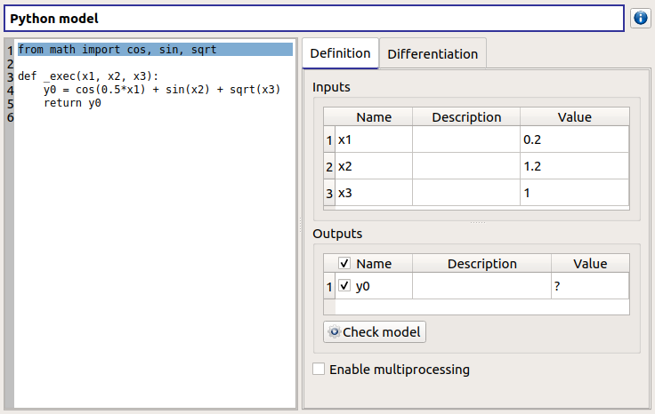check the doc link
click on ‘Definition’ child item of ‘fixedDataModel’ item
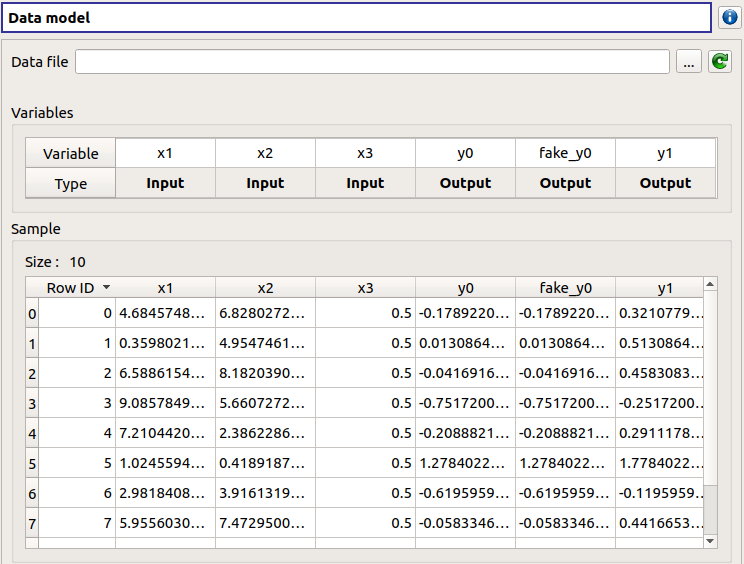click on reload button : nothing appends
click on ‘Definition’ child item of ‘importDataModel’ item

click on reload button : nothing appends
check the doc link
Deterministic analyses¶
Each analysis item is associated with a window with a table of parameters (optional), a progress bar and a button ‘Run’ and a disabled button ‘Stop’
Check all the analyses wizards -> Right click on each item and choose Modify :
Evaluation : item evaluation1

deselect fake_y0
check the values : [0.2, 1.2, 1]
click on the Finish button
a window appears with a table of parameters, a progress bar and 2 buttons ‘Run’ and ‘Stop’
click on the ‘Run’ button

check result window

results only for y0 and y1
Optimization : item optim
First page check the values :
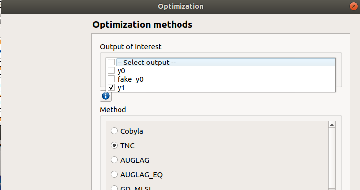selected output : y1
method : TNC
continue
Second page check the values :
x1 and x2 checked
starting point : [0.2, 1.2, 1.]
check table behavior:
unselect line : lower and upper bounds columns are disabled
unselect a lower bound : -inf symbol
unselect an upper bound : +inf symbol
if lower > upper bound : variable name in red, tooltip on the name and can not validate the page
if upper < lower bound : variable name in red, tooltip on the name and can not validate the page
if starting point not in the interval [lower bound, upper bound] : variable name in red, tooltip on the name and can not validate the page
set lower bounds : [0, 0, 0.9]
set upper bounds : [10, 10, 1.1]

Third page check the values :
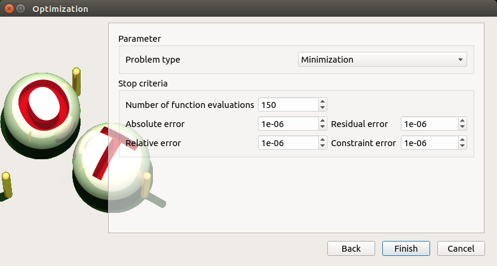Problem type : Minimization
Number of function evaluations : 150
Absolute/Relative/Residual/Constraint error : 1e-6
click on the Finish button
a window appears with a table of parameters, a progress bar and 2 buttons ‘Run’ and ‘Stop’
click on the ‘Run’ button
check result window :
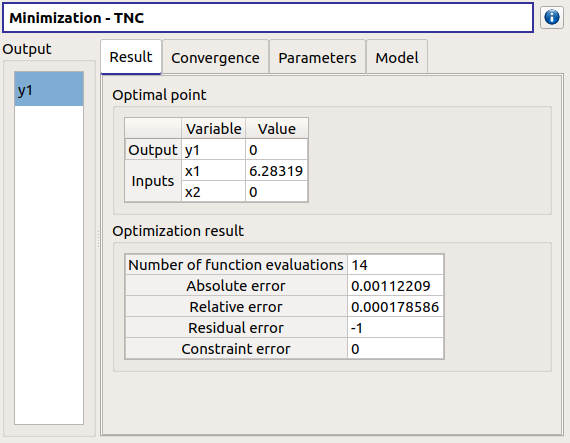left side : 1 variable in the list view
right side, tabs : Result - Convergence - Parameters - Model
Convergence tab : 2 tabs : Optimal value - Error
when a plot is displayed, a Graph setting widget appears at the bottom of the tree view : check its behavior
Morris : aMorris item
First page check the values :
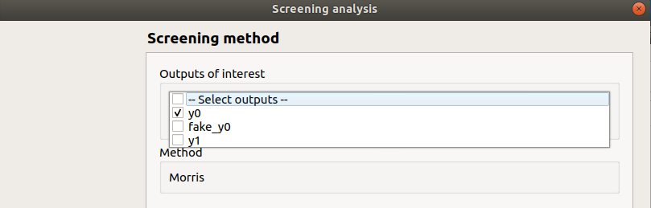selected output : y0
method : Morris
continue
Second page check the values :
3 lines
check table behavior:
if lower > upper bound : variable name in red, tooltip on the name and can not validate the page
if upper < lower bound : variable name in red, tooltip on the name and can not validate the page
set lower bounds : [0, 0, 0.9]
set upper bounds : [10, 10, 1.1]
Third page check the values :

Number of trajectories : 10
Level : 4
Seed : 2
Number of simulations : 40
check page behavior:
if Number of trajectories : 11 -> Number of simulations : 44
click on the Finish button
a window appears with a table of parameters, a progress bar and 2 buttons ‘Run’ and ‘Stop’
click on the ‘Run’ button
check result window :

left side : 1 variable in the list view
right side, tabs : Elementary effects - Table - Cobweb plot - Plot matrix - Scatter plots - Parameters - Model
Elementary effects tab : 2 tabs : Graph (mu*, sigma) - Graph (mu*, mu)
when a plot is displayed, a Graph setting widget appears at the bottom of the tree view : check its behavior
check the tabs (Table - Cobweb plot - Plot matrix - Scatter plots) are linked : do several selections in a tab and check the selection is the same in the others tabs
check Elementary effects tab behavior:
selection of points in the graphs (right click + draw rectangle) : a context menu appears with items : De/select the points
click on the x-axis : move the green vertical line. Check the line’s position is synchronized on the two graphs
all points at the left of the green line on the graphs correspond to the lines of the table with a cross in the No effect column
the blue points on the graphs correspond to the selected lines of the table
the red points on the graphs correspond to the unselected lines of the table
check the reuse of the Morris result by the Probabilistic model :
create a Probabilistic model for symbolicModel (right click on Definition item below symbolicModel)
On the window which appears, select all variables of the table

Click on the ‘Import Morris result’ button below the table
a wizard appears

check the table is read-only
click on Finish
check that x_2 and x_3 are unselected
uncheck x_1
Calibration : item calibration
First page check the values :

Observations : observations
Observed variables : [x1, y0]
Number of observations : 100
method : Non linear Gaussian
continue
Second page check the values :

x2 checked, x3 unchecked
values : [1.2, 1.1]
continue
Third page check the values :

only x2 in the table.
the mean is disabled
the mean is 1.2 and sigma is 0.12
continue
Fourth page :

only y0 in the table
the mean is disabled
continue
Fifth page :

confidence interval length : 0.99
estimation by Bootstrap resampling : checked
sample size : 25
Number of evaluations : 50
Errors : 1e-6
Maximum number of evaluations : 1250
click on the Back button 3 times to go on the second page :
select x3
change the value of x2 to 1.3
click on Continue button
the table of the third page has 2 rows : x2 and x3
the mean of x2 is 1.3 and sigma is 0.13
click on the Back button 2 times to go on the first page :
select Linear Gaussian method
continue
the table of the second page has not been changed
continue
the third and fourth pages are the same
continue
the next page is :

click on the Back button 2 times to go on the first page :
select Linear least squares method
continue
the table of the second page has not been changed
the next page is the last one :
confidence interval length : 0.99
click on the Back button 2 times to go on the first page :
select Nonlinear least squares method
continue
the table of the second page has not been changed
the next page is the last one :
click on the Cancel button
a window appears with a table of parameters, a progress bar and 2 buttons ‘Run’ and ‘Stop’
click on the ‘Run’ button
check result window :
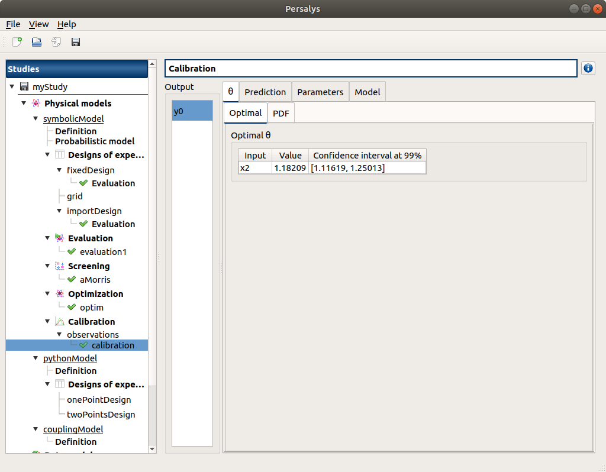left side : 1 variable in the list view
right side, tabs : θ - Prediction - Parameters - Model
θ tab : 2 tabs : Optimal - PDF
- Prediction tab4 tabsTable - vs Observations - vs Inputs - Residuals
check the 3 first tabs with Paraview graphs are linked (do several selections in a tab and check the selection is the same in the others tabs)
when a plot is displayed, a Graph setting widget appears at the bottom of the tree view : check its behavior
Designs of experiments¶
check the wizards:
right click on fixedDesign and choose Modify :
First page :

type : Full factorial design
check the doc link (Help button)
continue
Second page :

no selected line
first and second columns are not editable
the bounds and levels are disabled
all levels are equal to 1
check wizard behavior :
sixth column items : change combo box item to Delta
values changed : all deltas values are ‘-‘
first header item : check all
third column is disabled
other columns are enabled
the Deltas are [0.04, 0.24, 0.2]
sixth column items : change combo box item to Levels
values changed : all levels values are equal to 2
first header item : uncheck all
check second line
line 2 : change lower bound to 10, press enter
‘x2’ is red and its tooltip is: ‘The lower bound must be less than the upper bound’
line 2 : change upper bound to 0, press enter
‘x2’ is red and its tooltip is: ‘The lower bound must be less than the upper bound’
sixth column items : change combo box item to Delta
all deltas values are ‘-‘
line 2 : change upper bound to 20 and Delta to 15, press enter
error message : The delta must be greater or equal to 0 and less than the interval length
line 2 : change delta to 0.5, press enter
size of the design of experiments : 21
check all lines one by one :
first header item is checked
size of the design of experiments : 84
click on Finish button:
the window is updated : check the sample size is 84
the Evaluation item is removed
right click on grid and choose Modify :
- First page :
type : Full factorial design
continue
Second page :

x1 and x2 checked
lower bounds : [0.5, 0.5]
upper bounds : [9.5, 9.5]
levels : [7, 7]
- sixth column itemschange combo box item to Delta
deltas : [1.5, 1.5]
size of the design of experiments : 49
cancel
right click on importDesign and choose Modify :
- First page :
type : Imported design
continue
Second page :
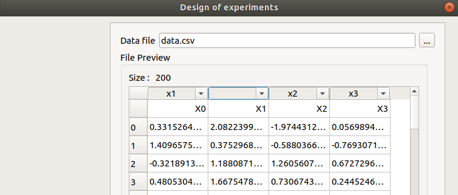Data file : data.csv
header items : [‘x1’, ‘’, ‘x2’, ‘x3’]
when changing a combo box item : the error message ‘Each variable must be associated with one column’ appears
set the second header item to ‘x2’ and the third one to ‘’
finish
check the design of experiments window is updated : check the values of x2 have changed
check the evaluation result window :
right click on importDesign, choose Evaluate :
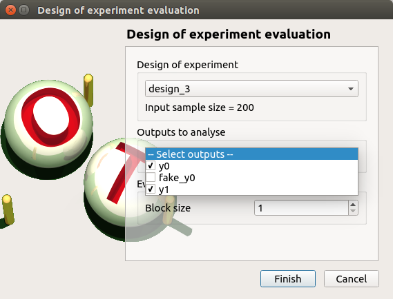deselect fake_y0
click on the Finish button
an item ‘Evaluation’ appears in the tree view
a window appears with a progress bar and 2 buttons ‘Run’ and ‘Stop’
click on the run button
the evaluation is launched
check result window :
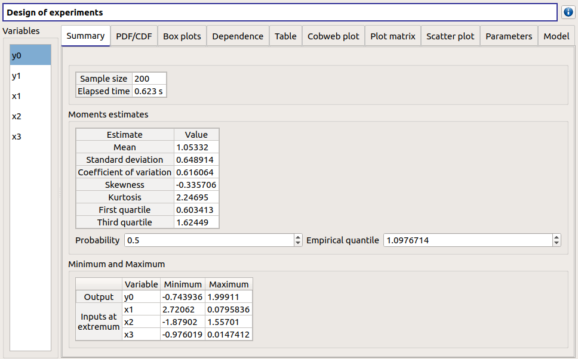10 tabs : Summary - PDF/CDF - Boxplots - Dependence - Table - Cobweb plot - Plot matrix - Scatter plot - Parameters - Model
Summary and PDF/CDF tabs :
when changing the variable, the tabs are updated
Other Plots tabs and Table tab :
when clicking on the tab, the list view has been hidden
when a plot is displayed, a Graph setting widget appears at the bottom of the tree view : check its behavior
check the tabs with Paraview graphs are linked (do several selections in a tab and check the selection is the same in the others tabs)
right click on onePointDesign, choose Evaluate :
a wizard appears, click on the Finish button
an item ‘Evaluation’ appears in the tree view
a window appears with a progress bar and 2 buttons ‘Run’ and ‘Stop’
click on ‘Run’ button
check result window :

4 tabs : Summary - Table - Parameters - Model
Summary tab :
a list view with a variable appears at the left side of the window
right click on twoPointsDesign, choose Evaluate :
a wizard appears, click on the Finish button
an item ‘Evaluation’ appears in the tree view
a window appears with a progress bar and 2 buttons ‘Run’ and ‘Stop’
click on ‘Run’ button
check result window :
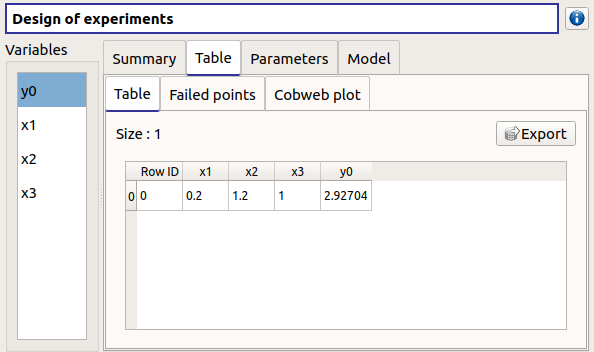4 tabs : Summary - Table - Parameters - Model
Summary tab :
a list view with a variable appears at the left side of the window
Table tab has 3 tabs: Table - Failed points - Cobweb plot
check the cobweb plot has 4 columns. The fourth one is named ‘Status 0: failed; 1: ok’.
save the study, close it, reopen it, check all windows are correctly build, close the study.
Probabilistic analyses¶
Import the file python/test/test_probabilistic_analyses.py
Each analysis item is associated with a window with a table of parameters (optional), a progress bar and a button ‘Run’ and a disabled button ‘Stop’
Check all the analyses wizards -> Right click on each item and choose Modify :
Monte Carlo : MonteCarlo item
First page check the values :

method : Monte-Carlo
selected outputs : y0 and y1
continue
Second page check the values :

Accuracy disabled : 0.01
max time : 16m40s
max calls : 1000
block size : 100
confidence interval disabled : 0.95
seed : 2
click on the Finish button
a window appears with a table of parameters, a progress bar and 2 buttons ‘Run’ and ‘Stop’
click on the ‘Run’ button
check result window :

left side : 4 variables in the list view
right side, tabs : Summary - PDF/CDF - Box plots - Table - Cobweb plot - Plot matrix - Scatter plots - Parameters - Model
when changing the variable, the tabs are updated
when a plot is displayed, a Graph setting widget appears at the bottom of the tree view : check its behavior
check the tabs (Table - Cobweb plot - Plot matrix - Scatter plots) are linked : do several selections in a tab and check the selection is the same in the others tabs
Summary tab :
2 types of extrema tables: one for the outputs y0 and y1 and one for the inputs x1 and x2
Moments estimates table has only 2 columns : Estimate and Value
check on the tabs (Table - Cobweb plot - Plot matrix - Scatter plots - Parameters - Model) : the list view is hidden
check tables are well drawn
Taylor : Taylor item

check the values:
selected outputs : y1 and y0
method : Taylor expansion
click on the Finish button
a window appears with a table of parameters, a progress bar and 2 buttons ‘Run’ and ‘Stop’
click on the ‘Run’ button
check result window :

left side : 2 variables in the list view
right side : 1 Summary tab
check table is well drawn
when changing the variable, the tabs are updated
Monte Carlo reliability : MonteCarloReliability item
First page check the values :

limit state : aLimitState
method : Monte-Carlo
continue
Second page check the values :

Accuracy is disabled : 0.01
max time : 16m40s
max calls : 1000
block size : 100
seed : 2
click on the Finish button
a window appears with a table of parameters, a progress bar and 2 buttons ‘Run’ and ‘Stop’
click on the ‘Run’ button
check result window :

left side : 1 variable in the list view
right side, tabs : Summary - Histogram - Convergence graph - Parameters - Model
when a plot is displayed, a Graph setting widget appears at the bottom of the tree view : check its behavior
check tables are well drawn
FORM IS reliability : FORM_IS item
First page check the values :

method : FORM - Importance sampling
continue
Second page check the values :

Accuracy is disabled : 0.01
max time : 16m40s
max calls : 1000
block size : 100
seed : 2
continue
Third page check the values:

Algorithm : Abdo-Rackwitz
Physical starting point : 5; 5
click on button ‘…’
set the value of x2 to 5.5
press Finish button
Physical starting point : 5; 5.5
Maximum number of evaluations : 100000
Absolute error : 0.001
Relative/Residual/Constraint error : 1e-5
click on the Finish button
a window appears with a table of parameters, a progress bar and 2 buttons ‘Run’ and ‘Stop’
click on the ‘Run’ button
check result window :

left side : 1 variable in the list view
right side, tabs : Summary - Histogram - Convergence graph - FORM results - Parameters- Model
when a plot is displayed, a Graph setting widget appears at the bottom of the tree view : check its behavior
FORM results tab :

4 sub-tabs : Summary - Design point - Sensitivities - Parameters
check tables are well drawn
FORM : FORM item
First page check the values :

method : FORM
continue
Second page check the values :

Algorithm : Abdo-Rackwitz
Physical starting point : 5; 5
Maximum number of evaluations : 100000
Absolute error : 0.001
Relative/Residual/Constraint error : 1e-5
click on the Finish button
a window appears with a table of parameters, a progress bar and 2 buttons ‘Run’ and ‘Stop’
click on the ‘Run’ button
check result window :

left side : 1 variable in the list view
right side, tabs : Summary - Design point - Sensitivities - Parameters - Model
check tables are well drawn
SORM : SORM item
First page check the values :

method : FORM
continue
Second page check the values :
Algorithm : Abdo-Rackwitz
Physical starting point : 5; 5
Maximum number of evaluations : 100000
Absolute error : 0.001
Relative/Residual/Constraint error : 1e-5
click on the Finish button
a window appears with a table of parameters, a progress bar and 2 buttons ‘Run’ and ‘Stop’
click on the ‘Run’ button
check result window :

left side : 1 variable in the list view
right side, tabs : Summary - Design point - Sensitivities - Parameters - Model
check tables are well drawn
Sobol : Sobol item
Pop-up with an error message appears : ‘The model must have an independent copula etc’
click on the ‘Probabilistic model’ item
click on the ‘Dependence’ tab of the window which appears
in the cell x1-x2 : write 0, press enter
click on the Sobol item, right click on it and choose Modify
First page check the values :

selected outputs : y0 and y1
method : Sobol
continue
Second page check the values :
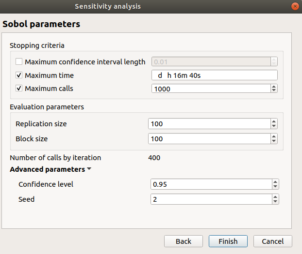max confidence interval length : 0.01
max time : 16m40s
max calls : 1000
replication size : 100
block size : 100
number of calls by iteration : 400
confidence level : 0.95
seed : 2
click on the Finish button
a window appears with a table of parameters, a progress bar and 2 buttons ‘Run’ and ‘Stop’
click on the ‘Run’ button
check result window :
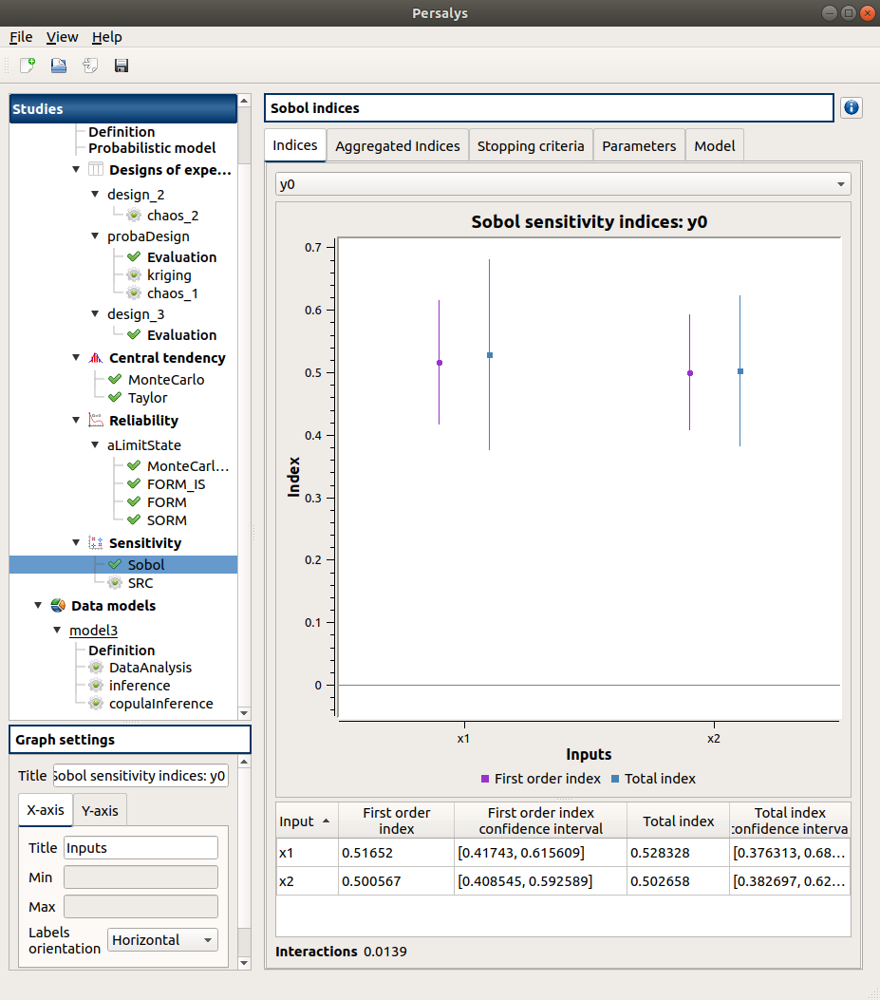left side : 2 variables in the list view
right side, tabs : Indices - Summary - Parameters - Model
when changing the variable, the Indices tab is updated
when indices plot is displayed, a Graph setting widget appears at the bottom of the tree view : check its behavior
Indices tab :
can not zoom the plot
Click on the 2 last sections headers of the table :
the table values are sorted
the plot is updated
check tables are well drawn
SRC : SRC item
First page check the values:

selected outputs : y0 and y1
method : SRC
continue
Second page check the values :

sample size : 1000
block size : 1
seed : 2
click on the Finish button
a window appears with a table of parameters, a progress bar and 2 buttons ‘Run’ and ‘Stop’
click on the ‘Run’ button
check result window :

left side : 2 variables in the list view
right side, tabs : Indices - Parameters - Model
when changing the variable, the Indices tab is updated
when indices plot is displayed, a Graph setting widget appears at the bottom of the tree view : check its behavior
Indices tab :
can not zoom the plot
click on the ‘Input’/’Index’/’Signed index’ section headers of the table :
the table values are sorted
the plot is updated
Kriging : kriging item
First page check the values:

design of experiments : design_1
selected outputs : y0, y1
method : Kriging
continue
Second page check the values :

covariance model : Matérn
nu : 1.5
trend : Linear
optimize covariance model parameters : checked
scale : 1; 1
amplitude : 1
on the line Scale click on the button ‘…’
a wizard appears : stochastic inputs x1 and x2 are listed
change the scale value of x1 to 2, then finish
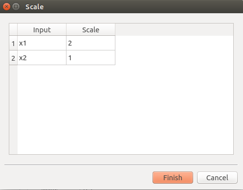change the amplitude value to 2

continue
Third page check the values :

all methods are checked
click on the Finish button
a window appears with a table of parameters, a progress bar and 2 buttons ‘Run’ and ‘Stop’
click on the ‘Run’ button
check the Kriging result window :

left side : 2 variables in the list view
right side, tabs : MetaModel - Results - Validation - Parameters - Model
when changing the variable, the tabs are updated
Metamodel tab : only the plot on the tab
when a plot is displayed, a Graph setting widget appears at the bottom of the tree view : check its behavior
check tables are well drawn
Validation tab has 3 tabs : Analytical, Test sample, K-Fold

right click on the kriging item : choose ‘Convert metamodel into physical model’
a new item MetaModel_0 appears in the tree view
click on its sub-item named ‘Definition’
change the value of x2 to 1.6
click on the Check model button

right click on the sub-item of design_3 named ‘Evaluation’ and choose New metamodel
choose the Kriging method, select all the validation methods:
a window appears with a table of parameters, a progress bar and 2 buttons ‘Run’ and ‘Stop’
click on the ‘Run’ button and click immediately on the Stop button
The result window does not contain the Validation tab

Functional chaos : chaos_1 item
First page check the values :
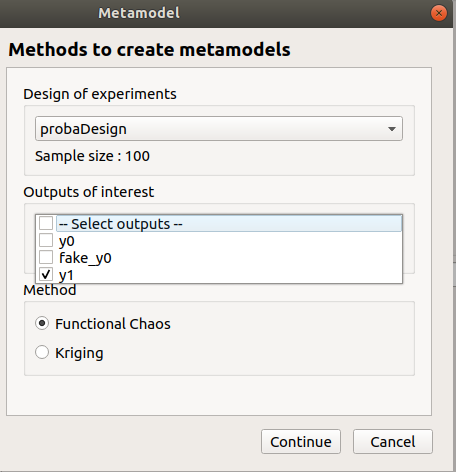design of experiments : probaDesign
selected outputs : y1
method : Functional chaos
continue
Second page check the values :

degree : 7
sparse : checked
continue
Third page check the values :
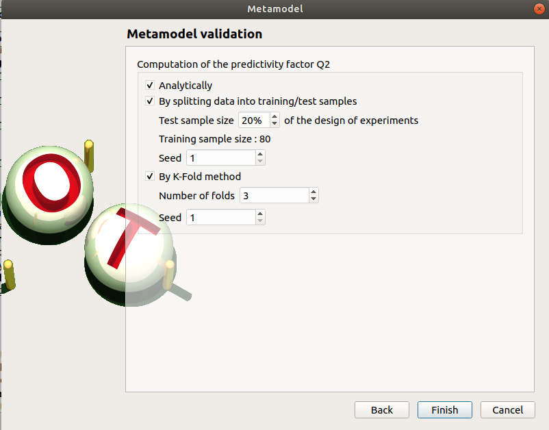all validation methods are checked
click on the Finish button
a window appears with a table of parameters, a progress bar and 2 buttons ‘Run’ and ‘Stop’
click on the ‘Run’ button
check result window :
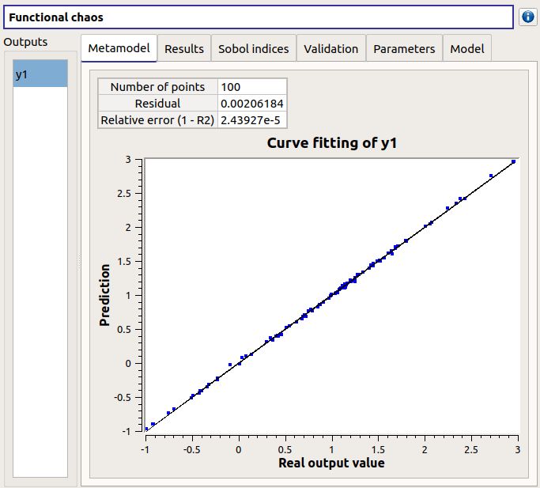left side : 1 variable in the list view
right side, tabs : MetaModel - Summary - Sobol indices - Validation - Parameters - Model
Metamodel tab : plot + Relative error table
when metamodel plot is displayed, a Graph setting widget appears at the bottom of the tree view : check its behavior
check tables are well drawn
Validation tab has 3 tabs : Analytical, Test sample, K-Fold
chaos_2
click on the ‘Run’ button
error message : ‘No results are available…’
right click on the item design_2 and choose Evaluate
a wizard appears, deselect fake_y0, click one the Finish button
a window appears, click on the ‘Run’ button
right click on the item chaos_2 and click on Modify
First page check the values :
design of experiments : design_2
selected outputs : y0, y1
method : Functional chaos
Second page check the values :
degree : 2
sparse : checked
continue
Third page check the values :
only Analytically is checked
click on the Finish button
a window appears with a table of parameters, a progress bar and 2 buttons ‘Run’ and ‘Stop’
click on the ‘Run’ button
check result window :
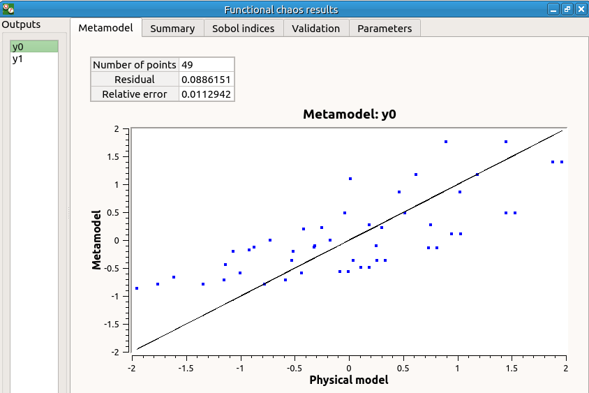left side: 2 variables in the list view
right side: tabs MetaModel - Summary - Sobol indices - Validation - Parameters
Metamodel tab : plot + Relative error table
when changing the variable, the tabs are updated
when metamodel plot is displayed, a Graph setting widget appears at the bottom of the tree view : check its behavior
check tables are well drawn
Data analysis : DataAnalysis item
the item is associated with a window with a progress bar and 2 buttons ‘Run’ and ‘Stop’
click on the ‘Run’ button
check result window :
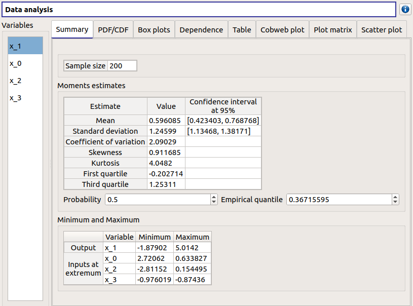left side: 4 variables in the list view
x_1 the output is the first item of the list
right side, tabs : Summary - PDF/CDF - Box plots - Dependence - Table - Cobweb plot - Plot matrix - Scatter plots
when changing the variable, the tabs (Summary - PDF/CDF - Box plots) are updated
when a plot is displayed, a Graph setting widget appears at the bottom of the tree view : check its behavior
check the tabs (Table - Cobweb plot - Plot matrix - Scatter plots) are linked : do several selections in a tab and check the selection is the same in the others tabs
check on the tabs (Table - Cobweb plot - Plot matrix - Scatter plots - Parameters) : the list view is hidden
Summary tab:
check tables are well drawn
2 types of extrema tables: one for the output x_1 and one for inputs x_0, x_1 and x_3
Moments estimates table has the columns : Estimate - Value - Confidence interval at 95%
there are bounds only for Mean and Standard deviation
check probability and quantile spinboxes behavior
Inference analysis : inference item

right click on the item ‘inference’ and choose ‘Modify’. Check the wizard behavior :
check all / uncheck all
no wheel event on Add button
an uncheck line == right side of the wizard disabled
choose item ‘All’ in the list of Add button => add all distributions in the list
remove items in the distributions table : use ctrl key (to select items one by one), use shift key (to select adjacent items)
select a variable + empty the distributions list + click on Finish
error message ‘At least one distribution etc.’
unselect all
select x_0 and add all the distributions
select x_1 and add the Beta distribution
click on the Finish button
a window appears with a progress bar and 2 buttons ‘Run’ and ‘Stop’
click on the ‘Run’ button
check result window :

left side : 2 variables in the list view
right side, tab : Summary
when changing the variable, the tabs are updated
when a plot is displayed, a Graph setting widget appears at the bottom of the tree view : check its behavior
the right side of the window contains 2 parts : a distributions list and 3 tabs PDF/CDF - Q-Q Plot - Parameters
when selecting a distribution, the tab widget is updated
check tables are well drawn
select x_0
select InverseNormal/LogUniform :
PDF/CDF and Q-Q Plot tabs are disabled
the Parameters tab contains an error message

check the reuse of the inference result by the Probabilistic model :
go on the Probabilistic model window of model1, tab ‘Marginals’
select the x3 variable
choose Inference result in the combo box of the variable x_3
a wizard appears, check its behavior (update of the tables when changing the items selection, etc.)

choose inference/x_0/Weibull, click on Finish
check that the distribution of x_3 is Weibull now
unselect x_3
Copula inference : copulaInference item
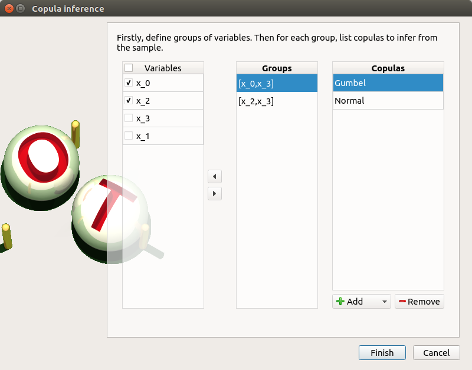right click on the item ‘copulaInference’ and choose ‘Modify’. Check the wizard behavior :
check all / uncheck all + left/right arrow buttons
no wheel event on Add button
choose item ‘All’ in the list of Add button => add all copulas in the list
remove items in the copulas table : use ctrl key (to select items one by one), use shift key (to select adjacent items)
add/remove groups with the arrows
if there are at least 3 variables in a group : only the Normal copula is proposed
select a variable + empty the copulas list + click on Finish
error message ‘At least one copula etc.’
unselect all
select [x_0,x_3] and add the Normal and Gumbel copulas
select [x_2,x_3] and add all the copulas
click on the Finish button
a window appears with a progress bar and 2 buttons ‘Run’ and ‘Stop’
click on the ‘Run’ button
check result window :

left side: 1 set of variables in the list view
right side, 1 tab : Summary
the right side of the window contains 2 parts : a copulas list and 3 tabs : PDF/CDF - Kendall Plot - Parameters
when selecting a copula, the tab widget is updated
when a plot is displayed, a Graph setting widget appears at the bottom of the tree view : check its behavior
check tables are well drawn
select [x_2,x_3]
select Ali-Mikhail-Haq / Farlie-Gumbel-Morgenstern :
PDF/CDF and Kendall Plot tabs are disabled
the Parameters tab contains an error message
check the reuse of the copula inference result by the Probabilistic model :
go on the Probabilistic model window of model1, tab ‘Dependence’
choose Inference result in the combo box of the [x_1,x_2] group
a wizard appears, check its behavior (update of the tables when changing the items selection, etc.)
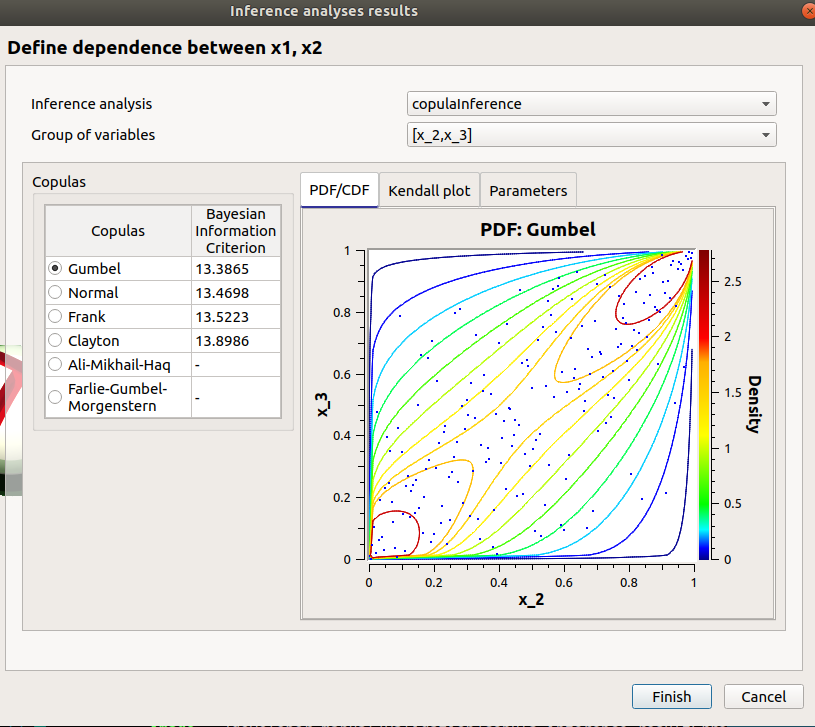choose copulaInference/[x_2, x_3]/Gumbel, click on Finish
check that the copula is Gumbel now
Designs of experiments¶
check the wizard:
right click on probaDesign and choose Modify :
- First page :
type : Probabilistic design
continue
Second page :
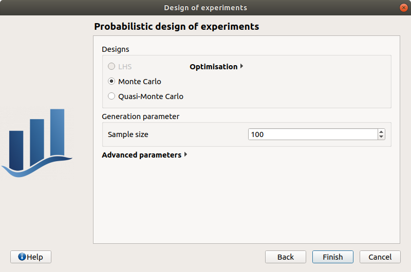Monte Carlo selected
LHS disabled: check the tooltip is ‘The physical model does not have an independent copula’
sample size : 100
seed : 0
cancel
save the study, close it, reopen it, check all windows are correctly built, close the study.
Field analyses¶
Import the file python/test/test_field_analyses.py
Each analysis item is associated with a window with a table of parameters (optional), a progress bar and a button ‘Run’ and a disabled button ‘Stop’
Check all the analyses wizards -> Right click on each item and choose Modify :
Monte Carlo : mcAnalysis item
First page check the values :

selected output : z
max time : 16m40s
max calls : 10
block size : 5
Karhunen-Loeve threshold : 2e-5
seed : 2
click on the Finish button
a window appears with a table of parameters, a progress bar and 2 buttons ‘Run’ and ‘Stop’
click on the ‘Run’ button
check result window :

left side : 1 variable in the list view
right side, tabs : Result - Input - Decomposition - Correlation - Parameters - Model
Result tab, tabs : Trajectories - Mean trajectory - Functional bag chart - Bag chart - Table
Input tab, tabs : Table - Plot matrix
Decomposition tab, tabs : Modes - Eigenvalues - ξi
ξi tab, tabs : PDF - Plot matrix
when a plot is displayed, a Graph setting widget appears at the bottom of the tree view : check its behavior
check the tabs (Trajectories - Functional bag chart - Bag chart - Table) are linked : do several selections in a tab and check the selection is the same in the others tabs
Evaluation : item evaluation

selected outputs : z, z2
check the values : [100, 55, 80, 16]
click on the Finish button
a window appears with a table of parameters, a progress bar and 2 buttons ‘Run’ and ‘Stop’
click on the ‘Run’ button
check result window

left side : 2 variables in the list view
right side, tabs : Result - Input - Parameters - Model
Result tab, tabs : Trajectory - Table
Input tab, tabs : Table
when a plot is displayed, a Graph setting widget appears at the bottom of the tree view : check its behavior
save the study, close it, reopen it, check all windows are correctly built, close the study.
Diagrams¶
Physical model¶
open the interface
create a new Study
- click on ‘Symbolic model’ button of the window of myOTStudy
the item SymbolicModel_0 appears in the tree view
a new Physical model diagram window appears in the mdiArea, check its behavior (cursor, arrow colors, buttons availability, messages text)
only the ‘Model definition’ button is enabled

- click on ‘Model definition’ button of the diagram: an item ‘Definition’ appears
add an input : the ‘Design of experiments creation’ and ‘Probabilistic model definition’ buttons of the diagram are enabled
add an output, set its formula to X0 : the ‘Model evaluation’, ‘Optimization’ buttons of the diagram are enabled
- click on the ‘Model evaluation’ button of the diagram
a wizard appears, click on Cancel
- In the model windowadd a second input
the ‘Screening’ and ‘Observations’ buttons of the diagram is enabled
- click on the ‘Screening’ button of the diagram
a wizard appears, click on Cancel
- click on the ‘Optimization’ button of the diagram
a wizard appears, click on Cancel
- click on the ‘Observations’ button of the diagram
a wizard appears, import a sample with at least 2 columns, click on Finish
the ‘Calibration’ button of the diagram is enabled
redo the previous action
- click on the ‘Calibration’ button of the diagram
a wizard appears, there are 2 items in the combo box in Observations group box, click on Cancel
- click on the ‘Design of experiments creation’ button of the diagram
a wizard appears, click on Continue button on the first page
on the second page : select X0, set Levels = 20, click on Finish
the ‘Design of experiments evaluation’ button of the diagram is enabled
redo the previous action with Levels = 40
- click on the ‘Design of experiments evaluation’ button of the diagram
a wizard appears, there are 2 items in the combo box in Design of experiments group box, click on Finish, an item ‘Evaluation’ appears, click on it
click on the ‘Run’ button
the ‘MetaModel creation’ button of the diagram is enabled
- click on the ‘MetaModel creation’ button of the diagram
a wizard appears, click on Continue button then on Finish button
- click on the ‘Probabilistic model definition’ button of the diagram
a window appears, select X0
the ‘Sensitivity’, ‘Central tendency’ and ‘Limit state definition’ buttons of the diagram are enabled
- click on the ‘Sensitivity’ button of the diagram
a wizard appears, click on Cancel
- click on the ‘Central tendency’ button of the diagram
a wizard appears, click on Cancel
- click on the ‘Limit state definition’ button of the diagram
a window appears
the ‘Reliability’ button of the diagram is enabled
redo the previous action
- click on the ‘Reliability’ button of the diagram
a wizard appears, there are 2 items in the combo box in Limit state group box, click on Cancel
Data model¶
- click on ‘Data model’ button of the window of myOTStudy
the item dataModel_0 appears in the tree view
a new Data model diagram window appears in the mdiArea, check its behavior (cursor, arrow colors, buttons availability, messages text)
only the ‘Model definition’ button is enabled

- click on ‘Model definition’ button of the diagram: an item ‘Definition’ appears
click on the ‘…’ button, import the file data.csv
the first three columns are inputs and the last one is an output
all the buttons are enabled in the diagram
check that ‘Dependence inference’ button is enabled only if there are more than one variable
check that ‘Metamodel creation’ button is enabled only if there are at least one output and one input
if all the columns are disabled, all the buttons of the diagram are disabled
- save the current study, reopen
in the window of the ‘Definition’ item of the data model : click on the reload button
Field model¶
- click on ‘Symbolic Field model’ button of the window of myOTStudy
the item SymbolicModel_1 appears in the tree view
a new model diagram window appears in the mdiArea, check its behavior (cursor, arrow colors, buttons availability, messages text)
only the ‘Model definition’ button is enabled

- click on ‘Model definition’ button of the diagram: an item ‘Definition’ appears
add an input : the ‘Probabilistic model definition’ button of the diagram is enabled
add an output : the ‘Model evaluation’ button of the diagram is enabled
- click on the ‘Model evaluation’ button of the diagram
a wizard appears, click on Cancel
- click on the ‘Probabilistic model definition’ button of the diagram
a window appears, select X0
the ‘Central tendency’ button of the diagram is enabled
- click on the ‘Central tendency’ button of the diagram
a wizard appears, click on Cancel